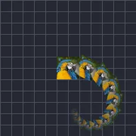

Lặp

Tự động tạo nhiều bản sao của lớp.
Repeat tạo các bản sao của lớp, lần lượt nối tiếp nhau. Count là số bản sao, Offset là khoảng cách mỗi bản sao dịch chuyển so với bản trước, Angle và Scale là cách mỗi bản sao xoay và phóng to, còn Time trì hoãn từng bản sao để chúng đi theo lớp như một vệt. Với các cách sắp xếp khác, xem Linear Repeat, Radial Repeat và Grid Repeat.
Cài đặt
| Cài đặt | Loại | Phạm vi | Mặc định |
|---|---|---|---|
| Số lượng | Số | 0 đến 9999 | 10 |
| Thời gian | Số | 0 đến 9999 | 0 |
| Độ lệch | Điểm (X, Y) | -99999 đến 99999 | 0, 0 |
| Góc | Góc | -3600° đến 3600° | 0° |
| Tỷ lệ | Số | 0 đến 10 | 1 |
| Alpha | Số | 0% đến 100% | 100% |